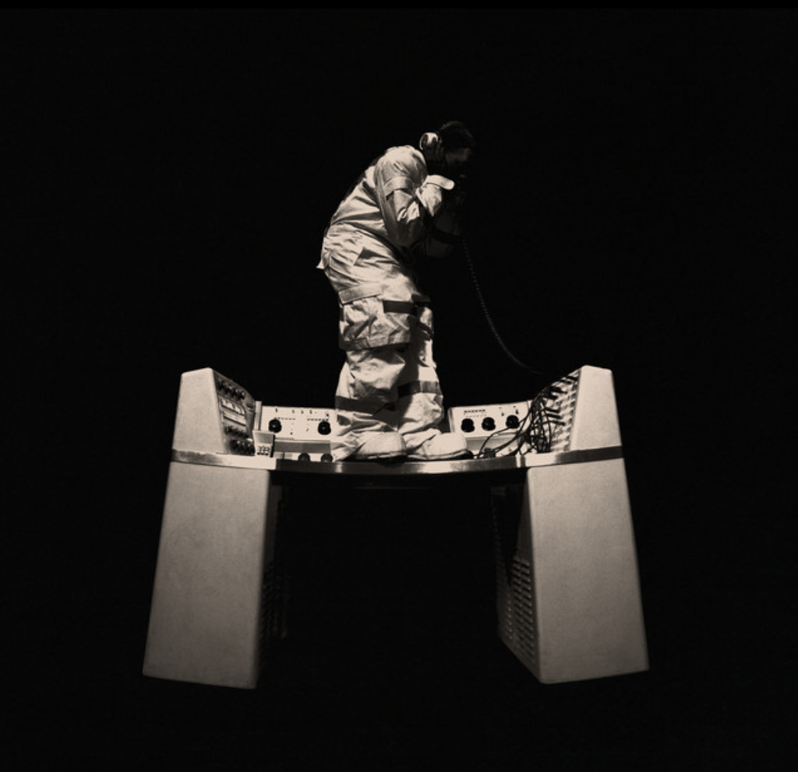
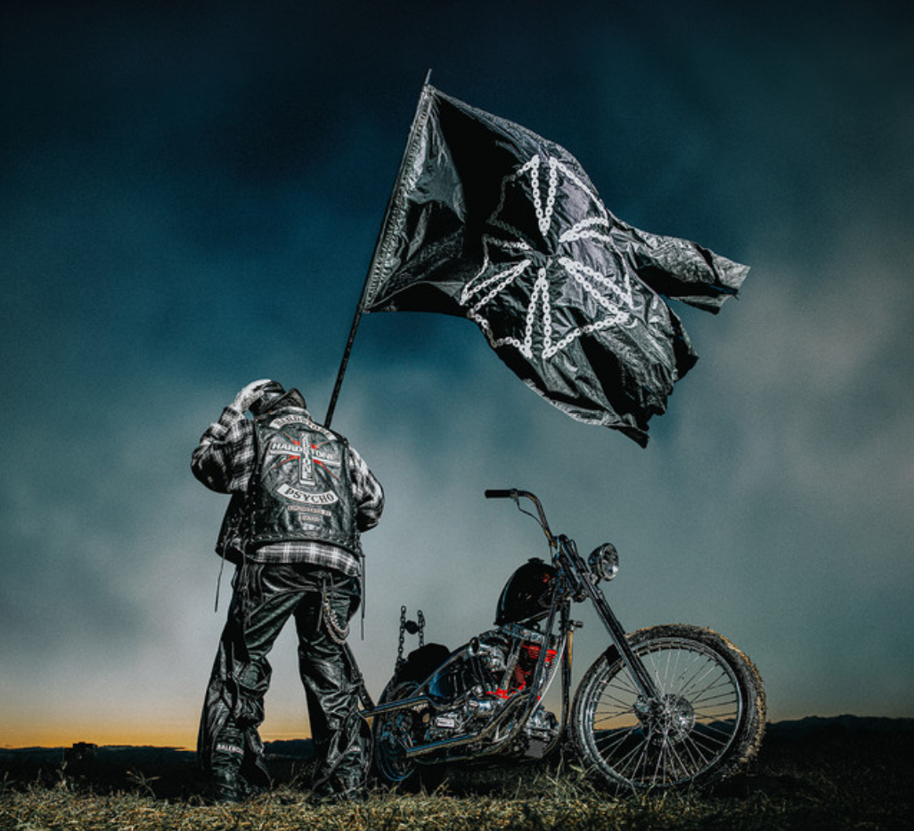

My short-term goals are to achieve a pass in my Maths GCSE exam and achieve a Distinction in my current digital portfolio assignment. I also want to get a job after finishing my exams in June so I can gain more work experience, improve my confidence and develop new skills for the future.
My long-term goals are to become financially independent at a young age and eventually start my own business, possibly an agency or a business related to trading and investments. After college, I am most likely planning to go to university where I may continue studying Computer Science or change my course to Business. I also want to start side hustles such as reselling branded clothes and shoes online while learning more about trading and investing. In the future, I want to build a successful career where I can continue developing my skills and become more independent.

